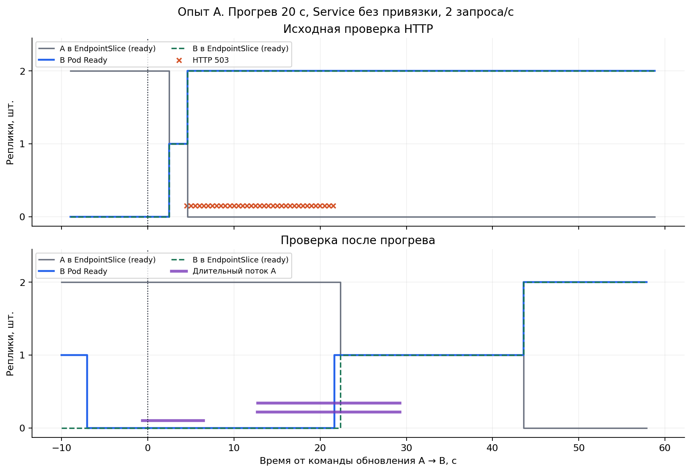
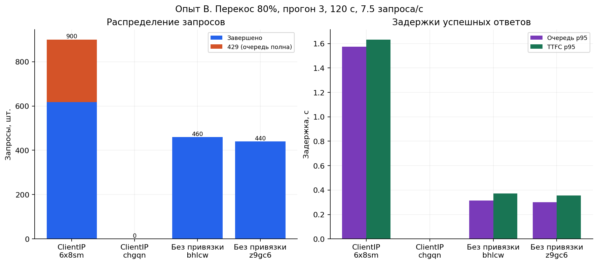
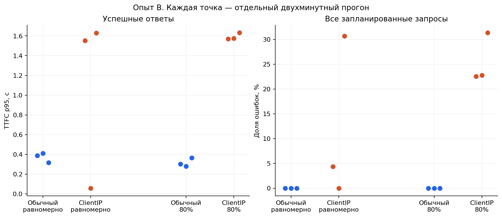
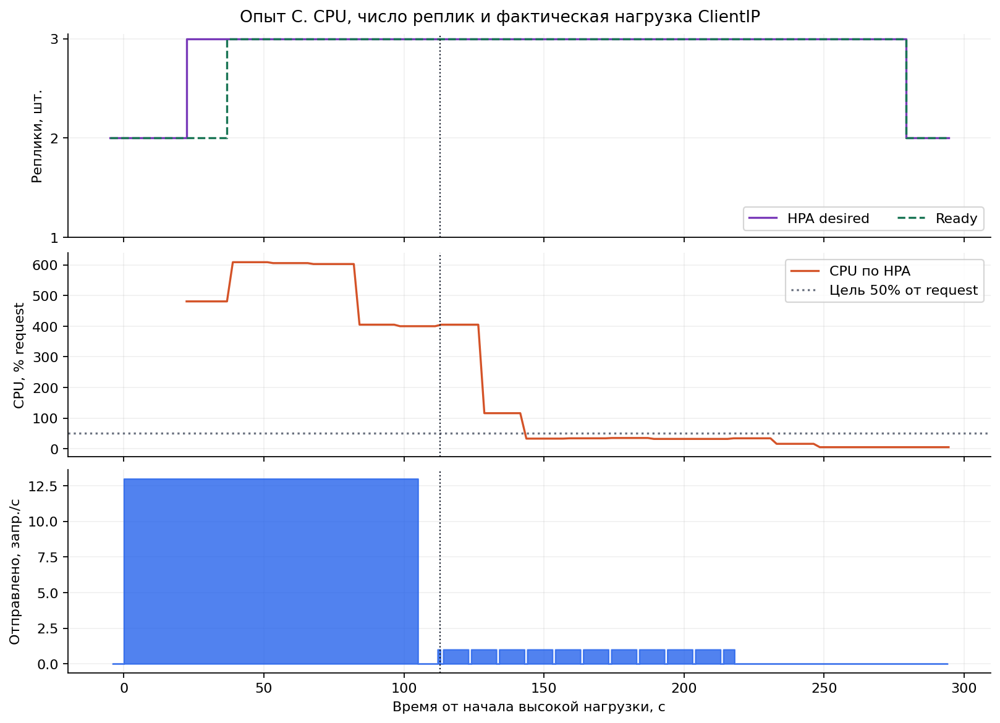

Сервис работает, пользователи ждут
API из ДЗ 8–10 развёрнут в Kubernetes с двумя репликами. Проверены готовность при прогреве, потоки при обновлении, распределение очередей и рост числа реплик по CPU.
Стенд
Сохранён контракт /health, /ready, /generate и проверка загруженной версии из предыдущего API. В этой работе /generate отдаёт части NDJSON, max_new_tokens задаёт предел частей имитатора. Ответы и структурированные логи содержат request_id, Pod, загруженную версию и SHA-256, а история передаётся в теле каждого запроса. Логи содержат session ID, метки метрик ограничены Pod и исходом.
Чарт монтирует маленькие артефакты A и B как immutable ConfigMap с именем на основе SHA-256. Процесс пересчитывает хеш файла и сверяет фактическую версию с ожидаемой. Helm фиксирует источники артефактов каждого релиза. На новом Pod загружается тот же файл из Kubernetes API.
| Параметр | Значение |
|---|---|
| Kubernetes / kind / Helm | v1.34.0 / v0.30.0 / v3.18.6 |
| Контейнеры | Docker Desktop 29.9.2, aarch64 |
| Лимиты Docker | 8 CPU, 7.65 GiB |
| Диск до запуска | 37Gi |
| API (запрос / лимит на Pod) | 100m / 800m CPU, 64Mi / 128Mi RAM |
| Реплики | 2, HPA 2–3 в опыте C |
| Хранилище метрик | 24 ч, 256 MB retention, том Prometheus 320 MiB, Grafana 160 MiB |
| Режим | simulated, Python 3.12.11, CPU |
Использование диска внутри узла после развёртывания, по каталогам:
3.6G /var/lib/containerd 127M /var/lib/etcd 55M /var/lib/kubelet
Версии и дайджесты в инвентаризации образов. Как поднять и удалить стенд, описано в README. Для сбора метрик Prometheus открывает /metrics каждого Pod через kubernetes_sd. Grafana показывает TTFC, полный ответ, running/waiting, успешные запросы, отказы, CPU, RSS и Ready-реплики.
Опыт A. Прогрев, выпуск и откат
Гипотеза. Если готовность совпадает с открытием HTTP-порта, Service направляет запросы в B во время прогрева. Новая версия прогревается 20 с. Перед заменой A запускаем поток на 12 частей, затем повторяем обновление под тем же фоновым трафиком с исправленными проверками.
Исправление. Startup подтверждает чтение артефакта, совпадение версии и SHA-256 и завершение прогрева. Readiness допускает рабочий трафик после startup. Liveness проверяет доступность HTTP-процесса. Kubernetes обновляет EndpointSlice при завершении Pod. В штатном обновлении maxUnavailable=0, maxSurge=1. preStop даёт 4 с на обновление маршрутизации, Uvicorn ждёт активные соединения до 25 с, общий grace period 35 с.
| Прогон | Запланировано | OK | 5xx | 429 | Оборваны | Тайм-ауты | Версия в ответе |
|---|---|---|---|---|---|---|---|
| broken | 126 | 91 | 35 | 0 | 0 | 0 | A: 17, unloaded: 35, B: 74 |
| fixed | 126 | 114 | 0 | 12 | 0 | 0 | A: 73, B: 53 |
| rollback | 63 | 63 | 0 | 0 | 0 | 0 | A: 63 |

Потоки через границу обновления
| Запрос | Pod | Отправлен, с | Завершён, с | Части | Версия | Результат |
|---|---|---|---|---|---|---|
| fixed-long | hw11-api-b9c89d557-b6bgm | -0.61 | 6.44 | 12 | A | ok |
| late-A-0 | hw11-api-b9c89d557-7n9bt | 12.71 | 29.22 | 24 | A | ok |
| late-A-1 | hw11-api-b9c89d557-b6bgm | 12.73 | 29.21 | 24 | A | ok |
Откат. B запустилась с артефактом A и отчиталась об ошибке проверки. Прямой запрос к B вернул HTTP 503. В рабочем EndpointSlice B оставалась неготовой. После helm rollback все 12 контрольных запросов обслужены A. Полный хеш артефакта A в результатах совпадает с файлом в чарте.
Принудительная потеря. Поток уже имел HTTP 200 и успел передать 8 частей из 24, закрывающая запись done отсутствует. Попытка при переполнении отдельно получила HTTP 429. Исходы ожидающих запросов: aborted: 8. Проверка через Service после удаления достигла уцелевшей реплики. Новый Pod стал Ready через 22.1 с от команды удаления, повторно загрузил версию A. Два диалога продолжились с прежними разными контрольными строками после передачи истории в запросе.
Граница результата. Grace period покрывает измеренную нагрузку и выбранные пределы потока. При принудительной остановке ответ может оборваться после заголовков 200. Клиент проверяет конец потока. В опыте повторы отключены, каждая попытка учитывается один раз.
Ready/EndpointSlice до исправления · после исправления · ошибка загрузки B · линия отката · результаты принудительной потери.
Опыт B. ClientIP и горячая реплика
Гипотеза. Когда 80% запросов идёт от одного IP, ClientIP отправляет их в один Pod и удлиняет очередь. Обычный Service позволяет распределять новые соединения между двумя репликами. Оба Service выбирают один Deployment. Один запуск клиента открывает отдельное TCP/HTTP-соединение на попытку и отправляет Connection: close. Один узел kind, сеть kindnet, маршрутизация по конфигурации kube-proxy. IP сверены по Downward API у клиента и по адресу на сервере.
Метод. Четыре клиента. Равномерный вариант делит попытки поровну. В сценарии перекоса Pod клиента 0 получает четыре из каждых пяти попыток, оставшиеся распределены по остальным трём клиентам. У обеих политик одинаковые 16 префиксов, длины входов, четыре части ответа, пауза 24 мс на часть и расписание 7,5 запроса/с на протяжении 120 с. Перед каждым повтором заменяются обе реплики, проверяется готовность. Кеш в начале пуст. Его ёмкость 16 префиксов, CPU-работа PBKDF2 — 50 000 итераций на попадание, 180 000 на промах и 90 000 на часть. На Pod один активный запрос и до восьми ожидающих.
Для задержек указаны p50 / p95, n равен числу OK. Для интервалов между частями n = 3 × OK.
| Прогон | План | Отпр. | OK | 429 | Обрыв | Тайм-аут | 5xx | TTFC, с | Очередь, с | Полный ответ, с | Между частями, с | Опоздание p95, мс | Кеш hit, % |
|---|---|---|---|---|---|---|---|---|---|---|---|---|---|
| plain-skew-1 | 900 | 900 | 900 | 0 | 0 | 0 | 0 | 0.106 / 0.302 | 0.051 / 0.239 | 0.239 / 0.436 | 0.044 / 0.047 | 4.7 | 96.4 |
| plain-skew-2 | 900 | 900 | 900 | 0 | 0 | 0 | 0 | 0.105 / 0.278 | 0.049 / 0.222 | 0.236 / 0.410 | 0.044 / 0.047 | 5.1 | 96.4 |
| plain-skew-3 | 900 | 900 | 900 | 0 | 0 | 0 | 0 | 0.111 / 0.366 | 0.056 / 0.307 | 0.246 / 0.502 | 0.045 / 0.050 | 7.5 | 96.4 |
| plain-uniform-1 | 900 | 900 | 900 | 0 | 0 | 0 | 0 | 0.108 / 0.389 | 0.053 / 0.333 | 0.241 / 0.524 | 0.044 / 0.047 | 4.4 | 96.4 |
| plain-uniform-2 | 900 | 900 | 900 | 0 | 0 | 0 | 0 | 0.111 / 0.411 | 0.055 / 0.355 | 0.245 / 0.542 | 0.044 / 0.048 | 4.1 | 96.4 |
| plain-uniform-3 | 900 | 900 | 900 | 0 | 0 | 0 | 0 | 0.106 / 0.315 | 0.051 / 0.254 | 0.238 / 0.448 | 0.044 / 0.046 | 6.7 | 96.4 |
| sticky-skew-1 | 900 | 900 | 697 | 203 | 0 | 0 | 0 | 1.491 / 1.570 | 1.434 / 1.515 | 1.624 / 1.705 | 0.044 / 0.048 | -4.7 | 95.4 |
| sticky-skew-2 | 900 | 900 | 695 | 205 | 0 | 0 | 0 | 1.496 / 1.575 | 1.440 / 1.520 | 1.631 / 1.711 | 0.044 / 0.048 | 5.5 | 95.4 |
| sticky-skew-3 | 900 | 900 | 618 | 282 | 0 | 0 | 0 | 1.560 / 1.633 | 1.503 / 1.575 | 1.699 / 1.773 | 0.046 / 0.051 | 7.9 | 97.4 |
| sticky-uniform-1 | 900 | 900 | 861 | 39 | 0 | 0 | 0 | 1.405 / 1.553 | 1.350 / 1.498 | 1.538 / 1.690 | 0.044 / 0.047 | 4.3 | 98.1 |
| sticky-uniform-2 | 900 | 900 | 900 | 0 | 0 | 0 | 0 | 0.055 / 0.057 | 0.000 / 0.000 | 0.186 / 0.193 | 0.044 / 0.046 | 5.9 | 98.2 |
| sticky-uniform-3 | 900 | 900 | 624 | 276 | 0 | 0 | 0 | 1.542 / 1.629 | 1.485 / 1.569 | 1.680 / 1.768 | 0.045 / 0.050 | 7.8 | 97.4 |


Причина. В sticky-skew-3 самая загруженная реплика получила 900 запросов из 900. На ней p95 очереди 1.575 с и 282 отказов. На второй 0 запросов и p95 очереди — с. При равномерном притоке наиболее близкое к равномерному распределение ClientIP было в sticky-uniform-2 (450 / 450). В других повторах несколько клиентских IP могут привязаться к одному Pod. Это видно в матрице «IP → Pod» в анализе. Привязка стабилизирует выбор для IP, а начальный выбор Pod для разных IP остаётся независимым.
Изменение. Для этой нагрузки выбран Service без привязки. При перекосе общий p95 TTFC с ClientIP по трём прогонам: 1.570, 1.575, 1.633 с. После изменения: 0.302, 0.278, 0.366 с. Отказы 429 по трём повторам: 203, 205, 282 → 0, 0, 0. Размывание локальности допускаем, поскольку выигрыш на очереди измерен. Реальный inference engine потребует отдельно измерить стоимость prefill, hit rate, TTFT и экономию времени GPU.
Сеть и конфигурации Service · Журналы 12 прогонов · Матрицы источников и реплик.
Сверка гистограмм и клиентского журнала
Клиент считает TTFC от отправки по монотонным часам до первой содержательной NDJSON-части, длительность ответа до закрывающей записи, inter-chunk latency как интервалы между соседними частями. Для каждой статистики p50/p95 берём только завершившиеся потоки и показываем их число. Вычисление CPU, сетевой переход и границы bucket объясняют разницу с серверной оценкой.
histogram_quantile(0.95,
sum by (le, pod) (rate(hw11_ttfc_seconds_bucket[30s])))Дашборд использует rate для скользящего окна. Для сверки с конкретным опытом из суммарных bucket-счётчиков вычитается снимок до измерения из снимка после обработки хвоста и следующего scrape. Запрос ограничен той же парой Pod, включены те же успешные потоки. Полные PromQL и результаты сохранены в promql.json соответствующих прогонов.
| Прогон | Метрика | n клиент | n Prometheus | p50 клиент, с | p50 Prometheus, с | p95 клиент, с | p95 Prometheus, с |
|---|---|---|---|---|---|---|---|
| plain-skew-1 | TTFC | 900 | 900 | 0.106 | 0.114 | 0.302 | 0.303 |
| plain-skew-1 | Весь поток | 900 | 900 | 0.239 | 0.230 | 0.436 | 0.451 |
| sticky-skew-1 | TTFC | 697 | 697 | 1.491 | 1.432 | 1.570 | 1.943 |
| sticky-skew-1 | Весь поток | 697 | 697 | 1.624 | 1.709 | 1.705 | 1.971 |
Опыт C. HPA и алерты
Гипотеза. Когда CPU-нагрузка превышает 50% от запросов CPU, HPA добавит третью реплику. При существующей привязке ClientIP ранее назначенные клиенты могут остаться на старых Pod, несмотря на Ready у новой реплики. HPA autoscaling/v2 использует metrics-server и CPU request 100m у api. Диапазон 2–3 реплики, окно уменьшения 60 с. Прогрев 12 с. Стоимость увеличена до 160 000 итераций на cache hit, 380 000 на miss и 220 000 на часть. Высокая фаза — 13 запросов/с × 105 с, пять частей и 16 мс на часть. Низкая — 0,9 запроса/с × 105 с, одна часть и 16 мс.
Два правила удерживают условие 12 с, окно расчёта 30 с. Для TTFC p95 > 0,6 с требуется минимум 15 успешных потоков. Для отказов 429 > 10% требуется минимум 20 исходов. Prometheus проверяет правила каждые 3 с.
| Событие | Время от начала высокой фазы, с |
|---|---|
| Переход desired на 3 | 22.4 |
| Третья реплика Ready | 36.8 |
| Начало низкой нагрузки | 112.9 |
| Возврат к двум Ready | 279.2 |
От начала низкой фазы до возврата к двум Ready прошло 166.3 с. Окно стабилизации отсчитывается контроллером по истории рекомендаций, поэтому фактический интервал включает сбор CPU и циклы контроллера.
От последнего завершившегося запроса низкой фазы до двух Ready прошло 61.7 с. Пока низкий трафик продолжался, средняя CPU держалась около 33–35% request. При трёх репликах переход к двум требует значения около 33% или ниже и устойчивой рекомендации на всём окне.
Третий Pod hw11-api-5f887645ff-kkzm7 создан 2026-11-15T14:44:33Z, Ready с 2026-11-15T14:44:47Z UTC по API. После его готовности он получил 0 из 886 запросов высокой фазы по ClientIP. Среднее CPU может вырасти и от одного горячего Pod. Если среднее ниже порога, HPA по CPU не увидит очередь. Под нагрузкой полезно смотреть waiting и долю отказов по каждому Pod.

| Фаза | План | OK | 429 | Оборваны | Тайм-ауты | p95 TTFC, с |
|---|---|---|---|---|---|---|
| high | 1365 | 484 | 881 | 0 | 0 | 2.978 |
| low | 95 | 95 | 0 | 0 | 0 | 0.151 |
| Правило | Состояния (время от высокой нагрузки, с) |
|---|---|
| Hw11HighTTFC | inactive (-5.0) → pending (10.1) → firing (22.4) → inactive (139.3) |
| Hw11HighRejectionRate | inactive (-5.0) → pending (8.0) → firing (20.3) → inactive (137.2) |
Сырые CPU, условия HPA, Ready и алерты · Конфигурация HPA · Экспорт Grafana.
Пять проверок
Команда make check-live воспроизводит нагрузку и HTTP-проверки в Kubernetes. make check проверяет уже сохранённые результаты.
test_1_warmup_and_graceful_streams (__main__.KubernetesAcceptance.test_1_warmup_and_graceful_streams) HTTP under A→B with both probe variants, correlated to EndpointSlice. ... ok test_2_invalid_b_and_actual_rollback_version (__main__.KubernetesAcceptance.test_2_invalid_b_and_actual_rollback_version) ... ok test_3_replacement_reloads_verified_version (__main__.KubernetesAcceptance.test_3_replacement_reloads_verified_version) ... ok test_4_distinguish_rejection_from_interrupted_stream (__main__.KubernetesAcceptance.test_4_distinguish_rejection_from_interrupted_stream) ... ok test_5_isolated_dialogues_with_explicit_history (__main__.KubernetesAcceptance.test_5_isolated_dialogues_with_explicit_history) ... ok ---------------------------------------------------------------------- Ran 5 tests in 0.007s OK
Единый CSV по всем попыткам. В сырых JSONL сохраняются время по монотонным часам, запланированное время, фактическая отправка, первая часть, завершение, HTTP-статус, исход, Pod, версия, число частей и интервалы. Время UTC служит для сопоставления с Kubernetes и Prometheus. Клиент использует монотонные часы для длительностей. Повторы в опытах выключены.
Ревью PR. Привязка диалога
Запрос отправлю в B: A начнёт обработку примерно через 3 с, B может за 0,8 с пересчитать префикс. При равных прочих расходах B даёт около 2,2 с выигрыша до начала дальнейшей генерации. Жёсткую привязку предлагаю заменить выбором из совместимых Ready-реплик: учесть прогноз ожидания, стоимость незакешированной части и срок, оставшийся у клиента. При исчерпанных слотах и очереди вернём 429 до начала потока. Нужны распределения времени prefill по длинам контекста, hit rate, активная и ожидающая работа по Pod, остаток памяти, p95 TTFT и частота отказов под всплесками.
История диалога живёт на клиенте или в общем хранилище. При потере A следующий запрос передаёт ту же версионированную историю совместимой B, которая восстанавливает контекст. Начатый поток остаётся на исходном Pod до завершения в пределах grace period. При аварии клиент фиксирует неполный ответ. Новая попытка получает новый request ID и связывается с исходной, а частичный результат обрабатывается как незавершённый, без склейки двух независимых генераций.
На слайде 70 лекции 11 (08:14) приведён кейс Google Cloud. В GKE Inference Gateway при контекстно тяжёлой нагрузке Google увеличил вес очереди с 3 до 5, сохранив веса двух других факторов. Перегруженные узлы стало возможно обойти даже при cache hit. Публикация также показывает отдельный результат для всплесков в чате с DeepSeek V3.1: p95 TTFT снизился на 52%. Этот кейс поддерживает выбор, который учитывает и очередь, и локальность кеша. Первоисточник Google Cloud.